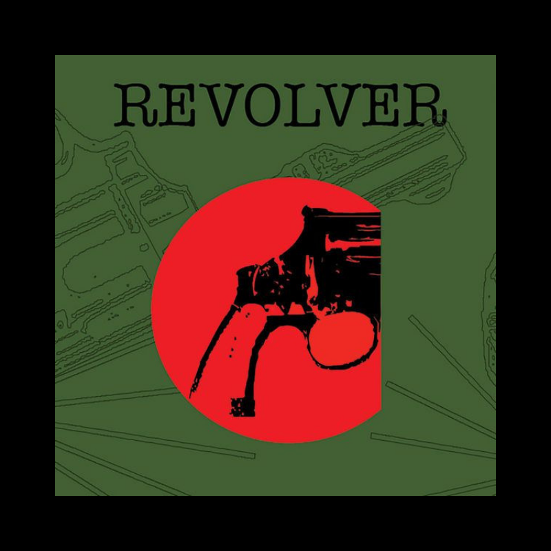
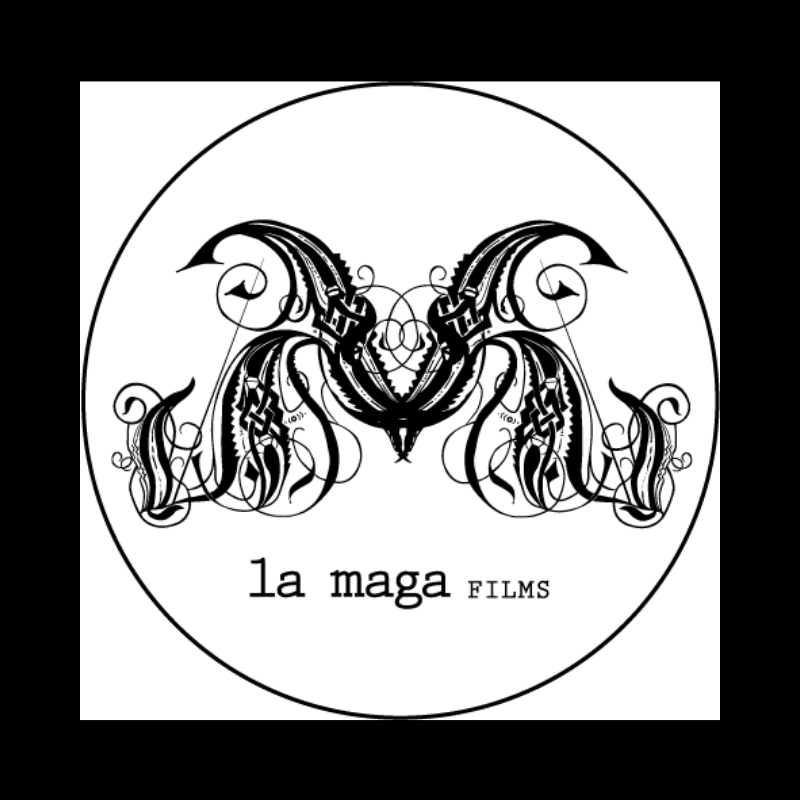

EXPERIENCIA LABORAL
De 2005 - 07.
Piraña Studio. Agencia de diseño y branding.
Asistente administrativa, diseño y operación de programas de diseño.
- Funciones:
- Orden de agenda 4 socios.
- Facturación y administración de contabilidad.
- Pagos de nómina.
- Armado de anuncios para impresos (revistas, posters).
- Edición de fotografías de productos.
- Investigación de mercado.
- Asistencia para coordinación de eventos.
2007.
Investigación de mercado independiente. Investigación y propuesta de mejores alternativas de negocio.
Investigación toma de muestra y conteo de datos para estadísticas.
- Funciones:
- Conteo de transeúntes, negocios y afluencia de tráfico.
- Investigación de crecimiento mobiliario.
- Conteo y estudio de datos.

De 2007 - 09.
Revolver. Agencia de diseño, branding y publicidad para Cine.
Administración, diseño y operación de programas de diseño.
- Funciones:
- Orden de agenda de 2 socios.
- Facturación y administración de contabilidad.
- Armado de anuncios para impresos (revistas, posters).
- Elboración y edición de posters para cine.
- Responsable de proyectos.
- Adaptación de diseños para impreso en gran formato:
espectaculares, autobuses y vallas.
- Asistencia en sets de grabación y de tomas fotográficas para campaña publicitaria.

De 2008 - 2009.
La Maga Films. Agencia de diseño, producción, animación, post-producción, arte, música y audio.
Administración, diseño y elaboración de presentaciones.
- Funciones:
- Facturación y administración de contabilidad.
- Adaptación de diseños.
- Elaboración y edición de presentaciones.
- Responsable de licitaciones.
De 2012 - 2013.
Marcas WFI y Reforma Penal México.
Administración de medios digitales y coordinación de campañas.
- Funciones:
- Investigación de mercado.
- Edición de imagen y contenido.
- Programación de publicaciones.
- Elaboración de reportes sobre respuesta e interacción.
De 2009 - Actualidad.
Fundación para la Protección de la Niñez IAP
Administración de programa de recaudación de fondos, medios digitales, voluntariados y asistente de donativos en especie.
- Funciones:
- Cargos domiciliados a donantes a través de sistema bancario.
- Inventario de premios para donantes en sistema de puntos.
- Toma y edición de fotografías de producto.
- Actualización de catálogo online de premios.
- Atención a clientes (donantes).
- Supervisión de sistema de productos y puntos, acceso a servidor para consulta de base de datos.
- Diseño y elaboración de campañas para medios digitales e impresos.
- Logística y coordinación en eventos de voluntariado con hasta 200 voluntarios.
- Canalización de doantivo en especie.
- Apoyo en levantamiento de información para inventarios.
- Elaboración de facturas y recibos deducibles.
- Toma y edición de fotografías.
De 2017 - Actualidad.
Dilemma Live Entertainment. Empresa de entretenimiento, producción de eventos y conciertos.
Asistente de camerinos y catering.
- Funciones:
- Montaje de camerinos y catering.
- Atención a talento.
IMER. Instituto Mexicano de la Radio.
2005 - 07 / Programa de proyecto ciudadano, ALTERACIÓN MODULADA /
2008 - 09 / Programa de proyecto ciudadano, CURVO /
- Funciones:
- Locución
- Creación de guiones radiofónicos.
- Producción y Post-producción de audios.

La Payola Radio. Estación de Radio por Internet.
2010 - 11 / Programa "¿Por qué no?"
2016 - Actualidad / Programa "Las Lunas de Júpiter" /
- Funciones:
- Locución
- Creación y adaptación de guiones radiofónicos.
- Producción y Post-producción de audios.
- Responsable de consola durante otro programa de la estación.